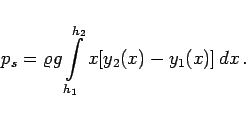

Inhalt Index DeskTop Bronstein

 Integralrechnung Bestimmte Integrale Anwendungen bestimmter Integrale Anwendungen in Mechanik und Physik
Integralrechnung Bestimmte Integrale Anwendungen bestimmter Integrale Anwendungen in Mechanik und Physik


In einer ruhenden Flüssigkeit mit der Dichte  unterscheidet man den Schweredruck und den Seitendruck. Letzteren übt die Flüssigkeit auf eine Seite einer Platte aus, die senkrecht in sie eingetaucht ist. Beide nehmen mit der Tiefe zu.
unterscheidet man den Schweredruck und den Seitendruck. Letzteren übt die Flüssigkeit auf eine Seite einer Platte aus, die senkrecht in sie eingetaucht ist. Beide nehmen mit der Tiefe zu.
| (8.66) |
wobei g die Fallbeschleunigung ist.
|  | (8.67) |
Mit den Funktionen y1(x) und y2(x) wird der linke bzw. rechte Rand des Deckels beschrieben.